PORTFOLIO
김동재 — 게임 프로그래머
- 010-2651-7105
- toymas24@gmail.com
- github.com/KimDJ7105
2026-11-17
01
자기소개 & 프로젝트 요약
“증상보다 구조를, 추측보다 실측을 먼저 살핍니다.”
김동재 | 한국공학대학교 게임공학과 졸업 (2019.03 ~ 2025.02)
| 프로젝트 | 핵심 강점 | 기술 스택 |
|---|---|---|
| GeoIP Cube Painter | 실측 기반 성능 엔지니어링 | C++, uWebSockets |
| 살인의 추억 | LLM 기반 판정 게임 설계 · 모델 한계 판단 · 실측 기반 구조 결정 | C++, Boost.Beast, Ollama |
| Truss 부트캠프 최종 프로젝트 1등 | LLM(Claude Haiku) 주문 생성 · 운영 환경 장애 진단 · 데이터 정합성 | Go, Kafka, AWS Bedrock |
| 증강 오목 웹 게임 | Redis 기반 세션 상태 복구 설계 및 장애 복구 검증 | Node.js, WebSocket, MySQL, Redis |
| Project Re:Walk 졸업작품 | 서버 구조 설계 및 비동기 객체 생명주기 제어 | C++, Boost.Asio, 멀티스레드 |
| No More Crunch | 네트워크 동기화 및 State Authority 기반 설계 | Unity, Photon Fusion2 |
관심 분야
- 동기화, 동시성, 실시간 상호작용에서 발생하는 문제에 흥미를 느낍니다.
- 낯선 기술은 AI를 활용해 빠르게 익히고, 실제 환경에서 적용하고 검증합니다.
- 만들고 싶은 게임을 스스로 구상하고, 직접 구현해보는 과정을 좋아합니다.
02
나의 AI 활용 방법
AI는 선택지를 넓히고 속도를 내고, 저는 근거를 살피고 실제 환경에서 확인합니다.
| 활용 방식 | 사례 |
|---|---|
| 설계 논의 — AI와 설계에 대해 논의하고, 비용과 복잡도를 근거로 구체화해 나갑니다. | GeoIP 타일 동기화 |
| 진단 조수 — AI를 활용해 문제를 분석하고 실제 환경에서 검증합니다. | Truss 초과 체결 |
| 학습 가속 — 낯선 기술은 AI로 빠르게 익히고, 확보한 시간은 설계와 문제 해결에 사용합니다. | Truss |
| 출력 검증 — AI의 출력은 틀릴 수 있다는 전제로 검증하고, 문제를 구조적으로 방지합니다. | 살인의 추억 · Truss AI 트레이더 |
서버 설계부터 구현까지, 직접 수행한 경험이 있습니다(Re:Walk).
03
GeoIP Cube Painter
소개
접속 IP로 유저의 국가를 판별해 그 나라의 대표 좌표에서 시작시키고, 지나간 자리를 자국 색으로 칠하며 영역을 넓혀가는 실시간 멀티플레이 웹 게임이다.
uWebSockets 기반 싱글스레드 비동기 이벤트 루프 위에서 커스텀 바이너리 프로토콜로 서버-클라이언트 통신을 설계·구현했다. Terraform으로 AWS EC2에 직접 배포하고, k6로 실제 부하 테스트까지 수행했다.

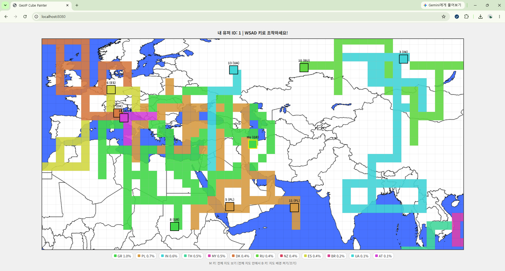

지도 off
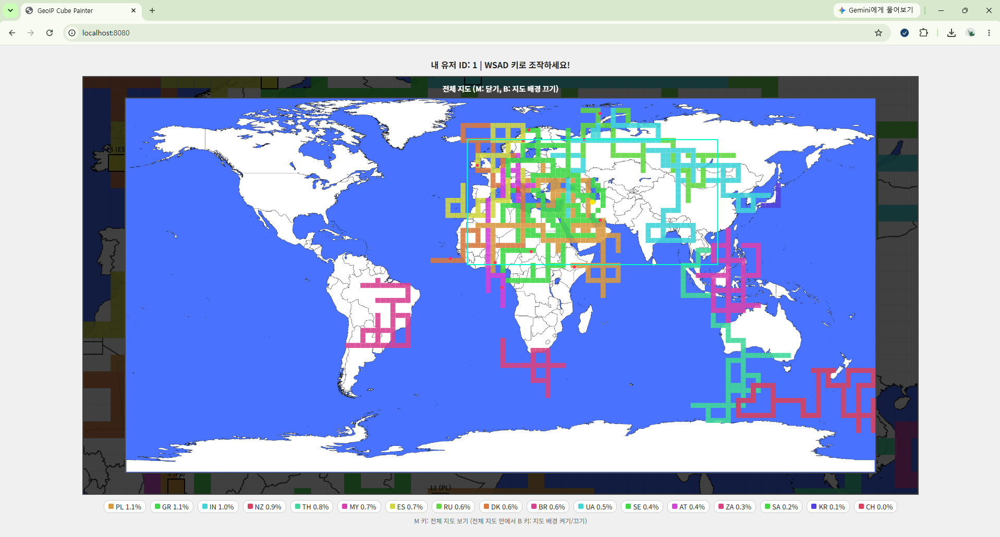
지도 on
AI 활용 사례 — 타일(그리드) 상태 동기화 최적화
초기 구조는 타일이 칠해질 때마다 모든 접속자에게 즉시 브로드캐스트하는 방식이었다. 접속자가 증가할수록 화면 밖 유저에게까지 변경 사항을 전송하는 것이 비효율적이라 판단해 Claude Code와 함께 개선 방향을 검토했다.
AI가 제안한 1차 개선안: AOI 밖에서 발생한 변경 사항을 유저별 목록에 저장하고 주기적으로 전송하는 방식이다. → 접속자 수와 타일 변경량에 비례해 메모리 사용량이 증가하는 구조적 문제를 확인, 유저별 목록을 제거하고 전역 상태로 관리하도록 설계를 바꿨다.
2차 검토: 전역 상태 갱신 방식으로 주기적 전체 전송과 델타(이전 상태 대비 변경분) 방식을 검토했으나, 델타 방식도 매 주기 전체 그리드를 스캔해야 하는 비용이 확인됐다.
3차안: 타일이 변경되는 순간 전역 Dirty-set에 기록해 별도 스캔 없이 변경 사항을 수집한다. 타일은 한 번 칠해지면 영구 보존되는 상태이므로, 즉시 전송과 전역 Dirty-set 기반 배치 동기화를 조합하는 방식이 적합하다고 판단.
| 항목 | 1차안 (유저별 Pending 목록) | 2차안 (전역 델타 비교 배열) | 3차안 (전역 dirty-set) |
|---|---|---|---|
| 추가 메모리 | O(유저 수 × 그리드 크기) | O(그리드 크기) | O(실제 변경분) |
| 매 주기 처리 비용 | 유저마다 반복 순회 + 개인화 버퍼 생성 | 그리드 전체(최대 11,250칸)를 매초 스캔해 이전 상태와 비교 | dirty-set에 쌓인 변경분만 순회 |
| 전체 스캔 필요 여부 | 불필요 (다만 유저 수만큼 반복) | 필요 (매 주기 전체 스캔) | 불필요 |
| 핵심 한계 | 접속자 수에 비례해 메모리 무한정 증가 | 메모리는 해결됐지만 매 주기 고정 스캔 비용 발생 | AOI 내부 정보로 이미 알고 있는 타일 상태도 전송 |
문제 해결 사례 — 최적화 효과 검증과 잔여 병목
이동 동기화에도 AOI 필터링을 적용한 결과, 동접 100명 기준 전송량 291MB → 157MB, 메시지 수 2,009만 건 → 1,103만 건으로 약 45% 감소했다. 다만 기대했던 수준의 부하 감소에는 미치지 못했다.
AOI 범위는 월드 면적의 약 18.7%로 고정돼 있어, 동접자가 증가할수록 각 유저의 AOI에 포함되는 대상 유저 수도 함께 증가 — 전체 연산량은 약 0.187×N²에 비례한다. 즉 AOI 적용은 O(N²)의 연산 계수를 약 5.3배 줄이는 최적화일 뿐, 점근적 시간 복잡도 자체를 개선하지는 못한다는 걸 확인했다.
타일 동기화 최적화 이후 배포 전 로컬 환경에서 k6로 동접 100명을 시뮬레이션하니 초당 약 36만 건의 메시지와 55초간 291MB의 트래픽이 발생했다. 원인은 이동 동기화에서 AOI 필터링 없이 모든 접속자에게 위치 정보를 브로드캐스트하고 있었기 때문이다. 이동 정보는 타일과 달리 지속적으로 갱신되는 일시적 상태라 누락된 변경 사항을 별도로 캐치업할 필요가 없다고 판단해, "가까운 유저에게는 즉시 전송하고 정지한 유저의 위치만 주기적으로 보정"하는 별도 동기화 방식을 설계했다.
해결 및 검증 — 실배포 환경의 한계 분석
AWS EC2(t3.small, 2 vCPU·2GB RAM) 실배포 환경에서 동접 100~2,000명 구간을 단계별로 측정했다. 동접 300명에서 CPU 사용률 91%, 평균 응답 지연 약 529ms를 기록했고, 1,500명부터 신규 접속이 타임아웃되는 한계를 확인했다. 싱글스레드 이벤트 루프 구조에서는 CPU가 포화되면 신규 연결 처리도 같은 이벤트 루프에서 대기하게 된다 — 신규 접속 실패 시도에서 최대 약 1분간 대기한 뒤 타임아웃되는 현상을 관측했다.
근본적인 개선을 위해 멀티스레드 구조 전환을 검토했으나, 프로젝트 규모와 예상 동시 접속자 수를 고려해 전환 비용이 과도하다고 판단, 후속 개선 과제로 남겼다.
- uWebSockets 기반 커스텀 바이너리 프로토콜을 설계하고 실시간 지도 동기화 서버 구현
- 영구 상태인 타일과 일시적 상태인 유저 위치의 특성에 맞춰 서로 다른 AOI 기반 동기화 전략 설계
- k6 부하 테스트로 O(N²) 병목을 발견하고, AOI 적용에 따른 상수 계수 최적화와 점근적 복잡도의 한계를 분석
- Terraform으로 AWS EC2에 직접 배포, 동접 단계별 실측으로 명확한 용량 한계선 도출
- Claude Code의 초기 설계 제안을 그대로 수용하지 않고, 메모리 확장성 및 처리 비용을 검토해 전역 Dirty-set 기반 구조로 개선
04
살인의 추억
소개
3~6인 멀티플레이 텍스트 추리 게임이다. 범인이 범행을 자유롭게 서술하면 LLM이 개연성을 100점 만점(5개 항목)으로 채점하고, 탐정의 추리를 5개 항목별 일치/유사/불일치로 판정한다.
LLM이 게임 규칙의 핵심을 맡는 구조라, AI 백엔드는 ICrimeEvaluator/IGuessJudge 인터페이스로 추상화해 모델을 환경변수로 교체할 수 있게 하고, Ollama 장애 시에는 안전한 기본값(평가는 절반 점수, 판정은 오답 처리)으로 게임이 계속 진행되도록 설계했다.
시연 영상은 촬영 예정 (브라우저 창 3개로 혼자 3인 플레이 녹화). 범행 서술 화면·판정 결과 화면 스크린샷도 추가 예정 — 우선 지도 3종만 아래에 둔다.
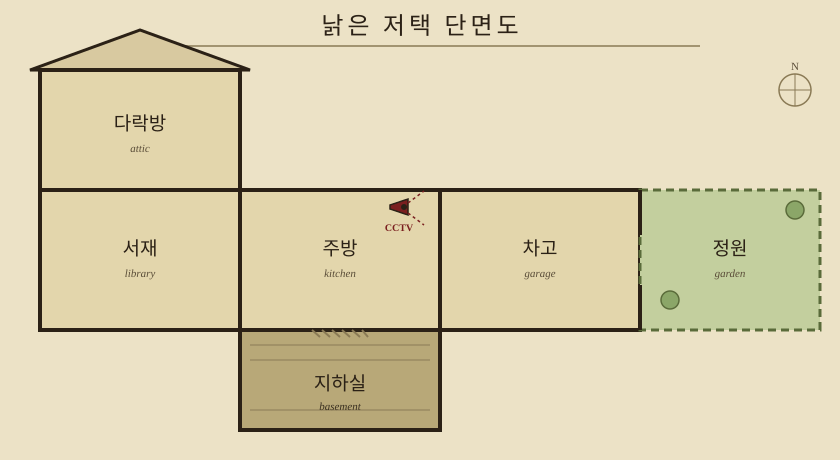
낡은 저택
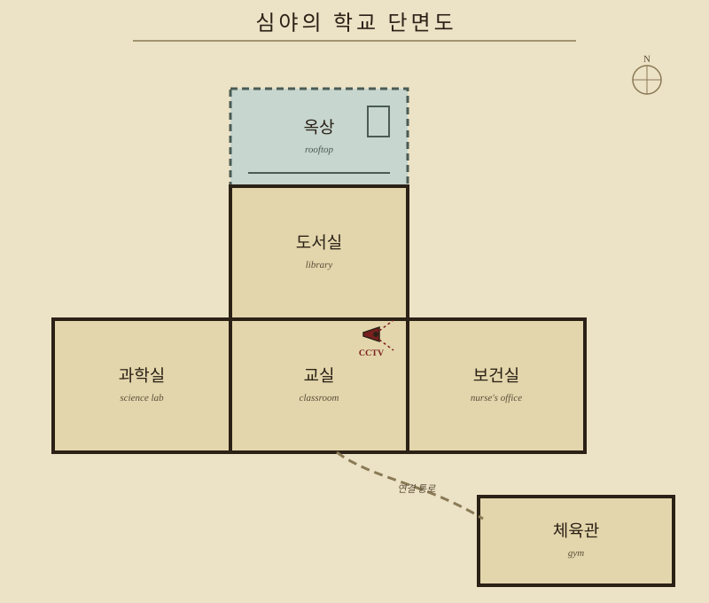
심야의 학교
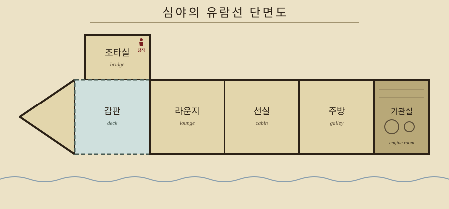
심야의 유람선
문제 해결 사례 — AI 판정 오류
문제: 탐정이 "몰라"처럼 무의미한 답만 입력해도 일부 항목이 "일치"·"유사"로 판정됐다. 당시 사용한 모델은 exaone3.5:7.8b였다.
1차 시도: 시스템 프롬프트에 "무의미한 답은 반드시 불일치로 판정하라"는 규칙과 예시를 추가하고, 판정관 역할에 맞게 temperature(같은 입력에도 모델이 얼마나 다양하게 답할지를 정하는 값)를 0.2로 낮춰 적용했다.
판단: 수정 전후의 판정 결과(5개 항목의 일치/유사/불일치)가 하나도 다르지 않았다. 샘플링 변동이 아니라 모델이 일관되게 잘못 판단하고 있다는 뜻이었다. 확신이 서지 않을 때 후하게 판정하는 성향이 모델 자체에 있다고 보고, 프롬프트가 아니라 모델 자체를 바꿔보기로 했다.
해결: AI 백엔드를 인터페이스로 추상화하고 모델을 환경변수로 고르게 설계해둔 덕분에, 코드 한 줄 건드리지 않고 qwen2.5:7b로 같은 시나리오를 재실행할 수 있었다. "몰라" 입력에는 5개 항목 전부 불일치로 정확히 판정됐고, 정답 추리를 다시 제출하면 5개 항목 모두 정답으로 판정돼 단순히 더 엄격해지기만 한 게 아니라는 것도 확인했다.
| 모델 | 선정 이유 | 확인된 경향 |
|---|---|---|
exaone3.5:7.8b | 한국어 자유 서술을 평가하는 과제라, 한국어 네이티브 튜닝 모델을 qwen2.5:7b와 함께 후보로 검토한 뒤 먼저 채택 | 무의미한 입력도 일부 항목을 후하게 판정하는 편향 확인 |
qwen2.5:7b | 다국어 지원에 강점이 있어 대안으로 함께 검토해둔 모델이며, exaone의 편향을 확인한 뒤 전환 테스트 | 같은 입력에 정확히 불일치 판정, 정답 추리는 여전히 정답으로 판정돼 기본 모델로 채택 |
설계 판단 — 측정으로 점검한 기능 추가 여부
대상 기능: AI 호출이 게임 서버를 막지 않도록 비동기 Job Queue와 Worker를 만들기로 계획했었다.
측정: Python(asyncio) 테스트 스크립트로 N개 방의 범인 역할 WebSocket 클라이언트를 동시에 제어해, 같은 시점에 범행을 제출하게 만들어 Ollama에 요청이 한꺼번에 몰리게 했다. 동시에 AI와 무관한 통제 방을 하나 둬서 0.2초 간격으로 메시지를 보내며, 요청이 쌓여 있는 동안 게임 서버의 다른 처리까지 느려지는지를 그 응답으로 가늠했다.
| 동시 요청 수(N) | 전체 완료까지 | 개별 요청 지연 범위 |
|---|---|---|
| 1 | 4.62초 | 4.62초 (단일값) |
| 5 | 9.96초 | 3.75초 ~ 9.96초 |
| 10 | 24.67초 | 4.77초 ~ 24.67초 |
| 20 | 44.98초 | 4.53초 ~ 44.98초 |
완료 시간은 N에 대략 비례해서 늘었다. 같은 시간 동안 통제 방에 보낸 메시지 218건은 전부 1ms 이내에 응답했고, 5초 타임아웃은 0건이었다. 게임 서버의 핵심 실행 흐름은 AI 요청이 아무리 쌓여도 전혀 지연되지 않는다는 뜻이다.
결론: 병목은 게임 서버가 아니라 Ollama 단일 인스턴스의 추론 처리량에 있다. 게임 서버 안에 Job Queue를 만들어도 Ollama가 초당 처리할 수 있는 추론 횟수 자체는 그대로라, 이 선형 지연은 사라지지 않는다. 그래서 이 비동기 구조는 추가하지 않기로 했고, 병목을 해결하기 위해서는 게임 서버의 스레딩 모델이 아니라 추론 서빙 계층(Ollama 인스턴스 추가 등)을 확장해야 한다.
05
Truss 멋쟁이사자처럼 클라우드 엔지니어링 부트캠프 6기 최종 프로젝트 1등
소개
Upbit에서 실제 가상화폐 시세 정보를 받아와서, AWS Bedrock의 Claude Haiku로 실제 시세를 보고 판단하는 AI 트레이더가 대량 주문을 생성하고, 그 주문을 처리하는 시뮬레이션 프로젝트이다. 매칭 엔진·주문 접수·체결 기록기·리플레이 엔진·AI 트레이더로 구성했다.
생성형 AI 도구를 활용해 처음 다루는 Go, Kafka 등의 학습 곡선을 단축하고, 엔지니어링 시간은 시스템 설계와 장애 진단에 집중했다.

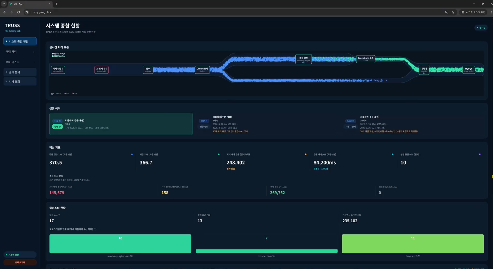
검증 설계 — LLM 출력 처리 파이프라인
입력: 마켓별 최근 30개 가격을 요약하지 않고 {market, prices[]} JSON 배열로 그대로 전달한다. 상승률·최댓값으로 미리 압축하면 모델이 판단에 쓸 추세의 모양 정보를 먼저 버리게 되기 때문이다. 시스템 프롬프트에는 "판단할 게 없으면 decisions를 빈 배열로"를 명시해 억지 판단 압박도 없앴다.
출력: Bedrock Converse API의 tool-use를 ToolChoice로 고정해, 모델이 자유 텍스트가 아니라 정해진 스키마로만 답하도록 강제했다. market / side(BUY·SELL enum) / price / quantity를 전부 required로 설정했다.
| 단계 | 거르는 것 | 실패 시 동작 |
|---|---|---|
| 1. 항목 단위 검사 (순수 함수, 유닛테스트) | 빈 market, BUY/SELL 외 side, 0 이하 가격·수량 | 이상한 1건만 제외하고 나머지 판단은 유지, 제외 건수 로그 |
| 2. 호출 실패·지연 | 연결 실패, tool-use 블록 없음, 30초 타임아웃 | 이번 주기만 건너뜀, 다른 마켓·봇으로 전파 안 됨 |
| 3. 주문 변환 | 임의 실수 가격, 부동소수점 잡음 | 호가 단위 배수로 스냅, 수량 소수 8자리 고정 |
| 4. 서버 공통 검증 | 잘못된 마켓 코드·side·가격·수량 | 400 거부 후 다음 틱, 재생은 멈추지 않음 |
마지막 방어선을 LLM 전용이 아니라 규칙 봇·리플레이 엔진과 같은 공통 검증에 둬서, 주문이 어디서 오든 같은 기준으로 걸러지게 했다.
문제 해결 사례 — 배포 환경에서만 터진 리밸런스 무한 루프
문제 재현: 배포 환경에서만 Kafka 컨슈머 그룹의 리밸런스 generation 번호가 몇 초 간격으로 계속 증가하고, 마켓 소유권 획득 시도가 전부 "generation has ended" 에러로 반복 실패했다. 개발 환경에서는 재현되지 않았다.
근본 원인: AWS MSK는 SASL/AWS_MSK_IAM 방식으로, 접근할 때마다 AWS 자격증명 기반 인증을 새로 거친다. 리밸런스 중 동기로 대기하는 AssignGroups() 안에서 20개 마켓의 오프셋을 순차 for문으로 조회하다 보니, 매 조회마다 이 인증이 반복되며 전체 조회가 오래 블로킹됐다. 그 사이 Kafka 코디네이터는 리더가 제한 시간 안에 배정을 끝내지 못했다고 판단해 리밸런스를 다시 트리거했고, 그 안에서 20번 순차 조회가 또 반복되며 자기유발 루프가 만들어졌다. 개발 환경의 dev-kafka는 이 인증 자체가 없어 지연이 생기지 않았고, 그래서 재현되지 않았던 것이다.
해결: 20개 마켓의 dial·오프셋 조회는 서로 완전히 독립적인 작업이라 순차로 처리할 이유가 없었다. measureLoad()를 마켓마다 별도 고루틴으로 실행하고 sync.WaitGroup으로 전부 끝날 때까지 기다리도록 바꿨다. 결과는 크기를 고정한 슬라이스에 파티션 인덱스로 직접 써서 데이터 레이스 없이 순서를 유지했고, 에러만 sync.Mutex로 보호했다. 독립적인 작업을 동시에 실행하니 전체 소요 시간이 "합"이 아니라 "가장 느린 작업 1개" 수준으로 줄어, AssignGroups()가 코디네이터의 타임아웃 안에 여유 있게 리턴할 수 있게 됐다.
문제 해결 사례 — 초과 체결
문제 재현: 체결 데이터의 정합성을 검증하기 위해 초과 체결·순서 역전·주문 유실 등의 이상 여부를 확인하는 검사 기능을 개발했고, 매수·매도 체결 수량의 합이 원래 주문 수량을 초과하는 정합성 오류를 확인했다.
근본 원인 — AI와의 진단 루프를 통한 원인 추적: Claude Code에 증상을 전달하고 원인 분석을 요청 → AI가 제안한 진단 SQL을 직접 DB에서 실행 → 실제 위반 데이터 확보 후 결과를 AI에 다시 전달 → 부분 체결 수량이 DB에서 독립적으로 반올림되며 오차가 누적되는 패턴임을 확인.
해결 및 검증: 체결 수량(Quantity)의 소수점 이하 정밀도를 8자리로 확장했다. 기존 위반 데이터가 확인된 원인과 일치함을 확인하고, 수정 후 초과 체결 발생 건수 0건을 검증했다.
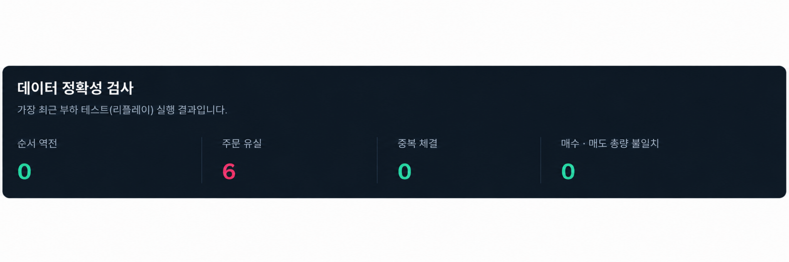
문제 해결 사례 — 중복 체결
문제 재현: 부하 테스트 중 기록기가 동일한 체결을 중복 저장하는 현상이 발생했다 — 매수·매도 주문 조합은 동일한데 체결 건수가 증가하는 현상을 확인했고, 기록기 재배포·스케일아웃 과정에서 반복적으로 관측됐다.
근본 원인: Kafka 재전달 — 기록기가 오프셋 커밋 전에 다운되면 Kafka는 해당 배치를 "처리 안 됨"으로 판단해 재전달한다(at-least-once 전달 특성상 생길 수 있는 재처리). 중복 저장 — 체결 테이블이 매번 새로운 랜덤 ID로 저장하는 구조라 멱등성이 없어서, 재전달된 배치가 완전히 동일한 체결을 새 ID로 다시 저장했다.
해결 및 검증: 매수·매도 주문 조합이 매칭 규칙상 논리적으로 한 번만 성립한다는 점을 이용해, 해당 조합에 유니크 키를 걸고 INSERT IGNORE로 재전달된 중복 삽입을 차단했다.
- Go·Kafka를 처음 다루며 생성형 AI로 학습 곡선을 줄이고, 설계와 장애 진단에 집중
- Bedrock(Claude Haiku) AI 트레이더의 출력을 4겹으로 검증하는 주문 파이프라인 설계
- 로컬에선 안 보이던 MSK 인증 지연발 리밸런스 루프를 근본 원인까지 추적해 병렬화로 해결
- 정합성 검사로 초과 체결(정밀도)과 중복 체결(멱등성) 원인을 규명하고 0건 검증
06
증강 오목 웹 게임
소개
렌주룰 기반에 '증강' 시스템을 추가한 실시간 대전 오목 웹 게임이다. 회원 인증, 로비 및 대기방, 실시간 대전, 전적 조회, 프로필 관리 기능을 구현하고 AWS에 실제 배포까지 완료했다. 서버·클라이언트 양쪽에 걸쳐 주도적으로 개발했다.


증강 선택 화면

플레이 화면

결과 화면
설계 및 구현 — Redis 기반 세션·상태 복구
In-memory 세션 저장 방식은 서버 프로세스의 생명주기에 종속돼, 프로세스가 죽으면 게임 상태가 소실되는 구조적 한계가 있다. 실시간 게임 서비스에서 이 한계는 곧 "장애 시 대전 중단"으로 이어진다.
Redis를 세션 및 게임 상태 저장소로 사용하고, 클라이언트 재접속 시 세션 ID로 기존 상태를 복구하도록 설계했다. 연결이 끊긴 직후 바로 패배 처리를 하지 않도록 email 기반 Redis TTL 키로 재접속 유예시간을 뒀다.
흐름: 클라이언트 ↔ Pod A가 Redis에 세션·게임 상태를 기록 → Pod/Node가 강제 종료되며 연결이 끊김(소켓은 자동 재시도) → 클라이언트가 신규 Pod B로 자동 재접속(socket.io) → Pod B가 Redis에 남아있던 세션·게임 상태를 읽어 복구.
검증 — 실제 배포 환경에서 장애 상황 재현
배포 환경에서 인위적으로 서버 장애를 유발해 Redis 기반 세션·게임 상태 복구가 정상 동작하는지 검증했다. 유저가 접속한 Pod와 그 Pod가 실행 중인 Node를 식별해 강제 종료하는 방식으로 게임 진행 중 장애 상황을 재현했고, Pod·Node가 강제 종료돼도 클라이언트가 재접속해 기존 대전 상태를 복구하는 것을 확인했다.
t3.medium 노드 4개로 구성된 AWS EKS 환경에서 k6로 최대 3,000명 동시 접속을 시뮬레이션해 서버 연결이 유지되는지 확인했다. 다만 k6 스크립트는 접속·기본 동작 위주라, 실제 대국 진행(착수·판정·증강 사용 등)의 정상 동작까지 부하 상태에서 검증하지는 못했다는 한계가 있다.
- React와 WebSocket 기반으로 렌주룰 및 증강 시스템을 적용한 실시간 대전 웹 게임 개발
- Redis를 세션·게임 상태 저장소로 활용해 서버 장애 이후에도 재접속·대전 상태 복구가 가능한 구조 설계
- Pod·Node 강제 종료로 장애 상황을 재현해 세션 상태 복구 동작 검증
- AWS EKS 환경에서 k6로 최대 3,000명 동시 접속 부하 테스트 수행
- AWS에서 일주일간 배포·운영해 서비스 연속성 확보 검증
07
Project Re:Walk 졸업작품
소개
최대 12명이 하나의 Room에서 동시에 전투하는 팀 기반 익스트랙션 슈팅 게임이다. C++ 및 Boost.Asio 기반 멀티스레드 비동기 서버를 개발했고, 팀장 겸 서버 프로그래머로서 서버 구조 설계와 게임 시스템을 담당했다.
AI 도구 없이 서버 구조 설계부터 구현, 테스트까지 단독으로 진행.


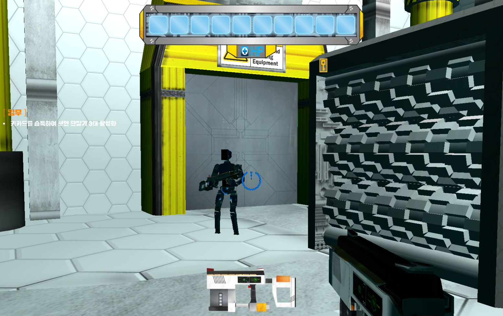
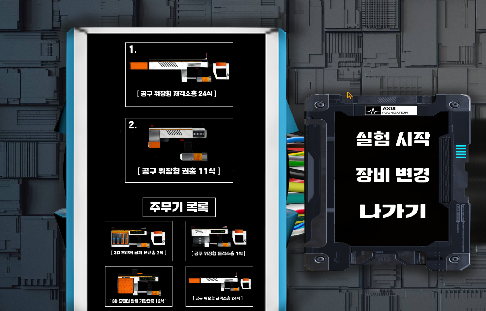
메인 화면
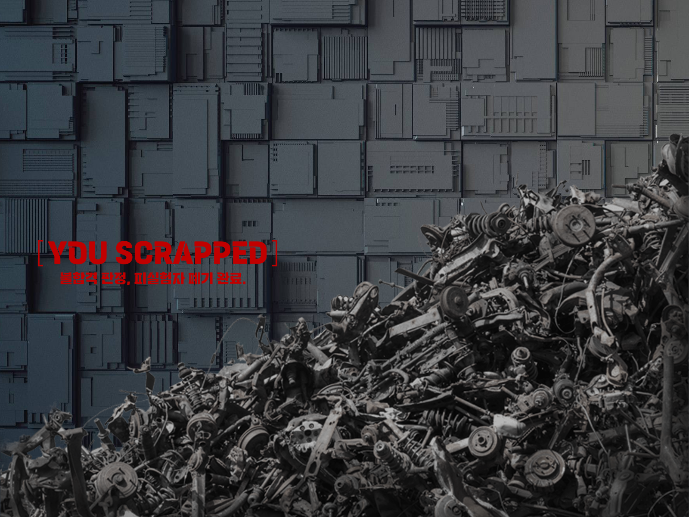
패배 시 화면

승리 시 화면
구조 설계 — Room 귀속 기반 혼합 스레드 모델
초기 설계에서는 여러 스레드가 모든 Room의 게임 루프에 접근할 수 있어, 공유 자원 보호를 위한 임계 영역과 컨테이너 동기화 비용이 발생했다.
각 Room을 하나의 스레드에 고정 귀속시키고, 해당 Room의 Player 객체는 오직 그 스레드에서만 접근하도록 재설계했다. Room 단위 배타성으로 스레드 간 공유를 원천 차단해, 표준 unordered_map으로 세션 관리가 가능해졌다.
자료구조 선정: ID 기반 직접 접근, 읽기 중심의 접근 패턴과 정렬 불필요 조건을 고려해 평균 O(1) 검색이 가능한 unordered_map을 선택.
변경 전: 메인 서버의 Thread 1~3이 모든 Room의 Game Loop에 자유롭게 접근. 변경 후: Thread마다 고정된 Room 그룹의 Game Loop만 전담 처리.
문제 해결 사례 — 간헐적 Access Violation
런타임 중 간헐적인 Access Violation이 발생했고, 특히 플레이어 퇴장 직후 발생 빈도가 증가하는 현상을 확인했다. 세션 삭제 직후 패킷 전송을 반복하는 테스트를 수행하고, 로그로 콜백 실행 순서를 추적해 재현 조건을 통제했다.
근본 원인: 단순한 스레드 간 데이터 경쟁이 아니라, 비동기 콜백의 실행 시점과 객체 생명주기가 일치하지 않는 것이 원인이었다 — 세션 삭제 이후에도 실행되는 비동기 콜백이 이미 소멸된 Session 객체를 참조하는 구조였다.
해결 및 검증: Session의 소유권을 raw pointer에서 shared_ptr 기반으로 전환하고, 비동기 콜백이 shared_ptr을 직접 캡처하도록 수정해 콜백 실행 중 객체 생존을 보장했다. Session-Game-Server 간 순환 참조 방지를 위해 weak_ptr로 상호 참조를 구성했고, 수정 후 동일 조건에서 재현이 중단되는 것을 확인했다.
- Boost.Asio 기반 비동기 네트워크 서버를 Room 단위로 분산된 멀티스레드 구조로 설계·구현
- Room별 스레드 귀속으로 Player 객체의 접근 범위를 제한하고, 동기화 비용을 줄이는 구조 설계
- 비동기 콜백과 객체 생명주기 불일치로 발생한 Access Violation을 shared_ptr·weak_ptr 기반 소유권 관리로 해결
- ID 기반 접근 패턴을 분석해 평균 O(1) 검색의 unordered_map을 자료구조로 선정
08
No More Crunch
소개
공포·협동·탈출 장르의 멀티플레이 게임이다. 호스트-클라이언트 구조에서의 동기화 기능과 게임 로직을 담당했고, Unity Version Control 기반으로 협업했다.
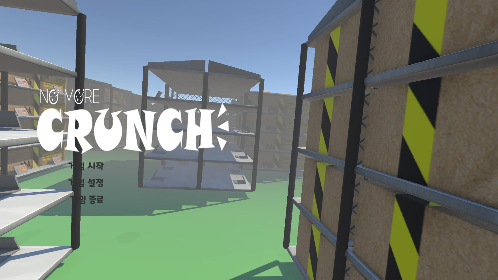
메인 화면
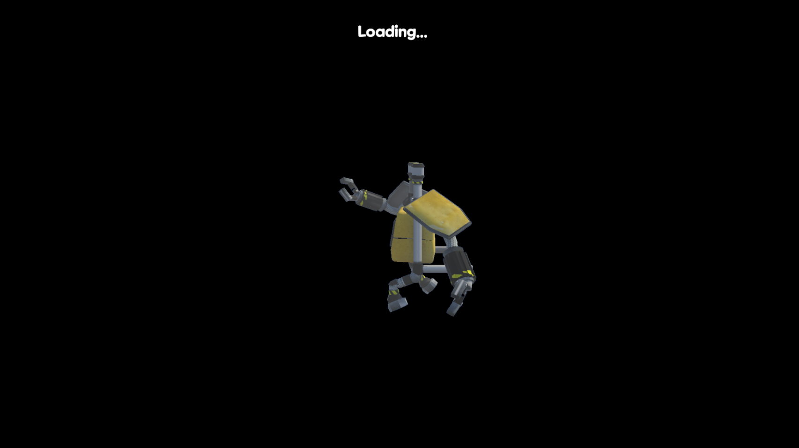
로딩 화면

유저가 모아야 하는 쿠키

몬스터의 모습
상호작용 동기화 — Photon Fusion State Authority
아이템 습득, 문 개방처럼 여러 플레이어가 동시에 상호작용할 수 있는 오브젝트는 소유권 문제가 발생하기 쉽다. 설계 단계부터 Photon Fusion의 State Authority 모델을 기준으로 상호작용 구조를 구현했다 — 상태 변경은 Authority를 가진 인스턴스에서만 반영되고, 렌더링은 그 상태를 따라가도록 역할을 분리했다.
[SerializeField] private Animator doorAnimator;
[Networked] private bool isOpened { get; set; } // 네트워크로 동기화되는 상태값
public void Interact()
{
if (isOpened) return;
// 상태 변경은 권위(Authority)를 가진 인스턴스에서만 수행
// → 두 플레이어가 동시에 눌러도 한 번만 반영됨
if (Object.HasStateAuthority)
{
isOpened = true;
}
}
public override void Render()
{
// 모든 클라이언트에서 실행 — 렌더링만 담당, 상태는 안 건드림
if (isOpened)
{
doorAnimator.SetTrigger("isOpen");
}
}- Photon Fusion 환경에서 오브젝트 소유권 충돌 가능성을 사전에 설계로 방어
- Unity Version Control 기반으로 팀 협업 진행
- 4인 팀에서 클라이언트-호스트 동기화와 게임 로직을 담당
09
마무리
"더 많은 사람이 함께, 안정적으로 즐길 수 있는 게임을 어떻게 만들 것인가?"
클라이언트부터 서버, 인프라까지 넘나든 프로젝트들은 이 질문으로 이어집니다. AI를 동료로 삼아, 무엇을 맡기고 무엇을 직접 확인할지 판단하며 이 질문의 답을 찾아가고 싶습니다.
감사합니다.
김동재
- 010-2651-7105
- toymas24@gmail.com
- github.com/KimDJ7105